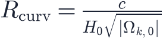

In this lesson you will learn
|
Curved space?
In school geometry, the angles of a triangle add up to 180°, and parallel lines never meet. These are the rules of Euclidean, or flat, geometry. But general relativity allows space itself to be curved, and then these rules change.
The cosmological principle permits only three possibilities, because the curvature must be the same everywhere:
Three geometries
It helps to picture two-dimensional surfaces first.
1. Flat ( ), like a sheet of paper.
The angles of a triangle add up to exactly 180°. The circumference of a circle is
. Parallel lines stay parallel. A flat universe is
infinite in extent (in the simplest topology).
), like a sheet of paper.
The angles of a triangle add up to exactly 180°. The circumference of a circle is
. Parallel lines stay parallel. A flat universe is
infinite in extent (in the simplest topology).
2. Positive curvature ( ), like the surface of a sphere.
Draw a triangle from the North Pole down to the equator, a quarter of the way
around, and back: all three angles are 90°, adding up to 270°. Angles of
triangles add up to more than 180°, circles have circumference less than
, and lines that start parallel eventually meet. A
closed universe is finite, yet has no edge: travel far enough
in a straight line and you return to your starting point.
), like the surface of a sphere.
Draw a triangle from the North Pole down to the equator, a quarter of the way
around, and back: all three angles are 90°, adding up to 270°. Angles of
triangles add up to more than 180°, circles have circumference less than
, and lines that start parallel eventually meet. A
closed universe is finite, yet has no edge: travel far enough
in a straight line and you return to your starting point.
3. Negative curvature ( ), like a saddle or a Pringle.
Angles add up to less than 180°, circles have circumference more than
, and parallel lines diverge. An open universe is
infinite.
), like a saddle or a Pringle.
Angles add up to less than 180°, circles have circumference more than
, and parallel lines diverge. An open universe is
infinite.
| Closed | Flat | Open | |
|---|---|---|---|
| Curvature |
|||
| Density | |||
| Triangle angles | more than 180° | 180° | less than 180° |
| Circumference | less than | more than | |
| Size | finite | infinite | infinite |
Curved in three dimensions Our space is three-dimensional, so its curvature cannot be pictured as a surface in a higher dimension that we can see. The mathematical rules are the same, however: we detect curvature from inside, by measuring angles and distances. |
The size of the curvature
The curvature has a characteristic length, the radius of curvature today:

When is small, this radius is enormous compared with the Hubble
distance  , and space looks flat over the region we can observe, just as a
small patch of the Earth's surface looks flat.
, and space looks flat over the region we can observe, just as a
small patch of the Earth's surface looks flat.
How to measure curvature
We need a giant triangle with a known side and a measured angle. Nature provides one:
A cosmic ruler In the hot early universe, sound waves travelled through the plasma until the cosmic microwave background was released, about 380 000 years after the Big Bang. The largest distance they covered sets a characteristic size of hot and cold spots in the CMB, and this size can be calculated from known physics. |
We know the length of this ruler and its distance, so we can predict the angle it should cover on the sky:
- in a flat universe, the typical spots are about 1 degree across;
- in a closed universe, light rays converge and the spots look larger;
- in an open universe, they look smaller.
In 2000 the BOOMERanG and MAXIMA balloon experiments found spots of about 1°, and
the WMAP and Planck satellites later confirmed it precisely. Combined with other
data,  : space is flat to high precision.
: space is flat to high precision.
Flat space, expanding universe A flat universe is still expanding. "Flat" refers to the geometry of space at a given moment, while expansion concerns how distances change with time. Spacetime as a whole is curved even when space is flat. |
Try it: Expansion History Explorer Explore the Ωm–ΩΛ map: the diagonal line marks flat universes, with closed ones above it and open ones below. |
Remember this
|